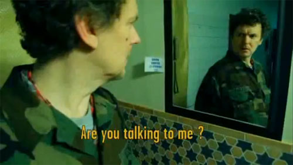

Michel Gondry (8 May 1963) is a French film director, screenwriter, and producer. He is noted for his inventive visual style and distinctive manipulation of mise en scène. [1] He won an Academy Award for Best Original Screenplay as one of the writers of the 2004 film Eternal Sunshine of the Spotless Mind. His other films include the surrealistic science fantasy comedy The Science of Sleep (2006) the comedy Be Kind Rewind (2008), the superhero action comedy The Green Hornet (2011) the drama The We and the I (2012), and the romantic science fantasy tragedy Mood Indigo (2013) He is well known for his music video collaboration with Donald Fagen, Radiohead, Björk, Beck, The Chemical Brothers and The White Stripes.